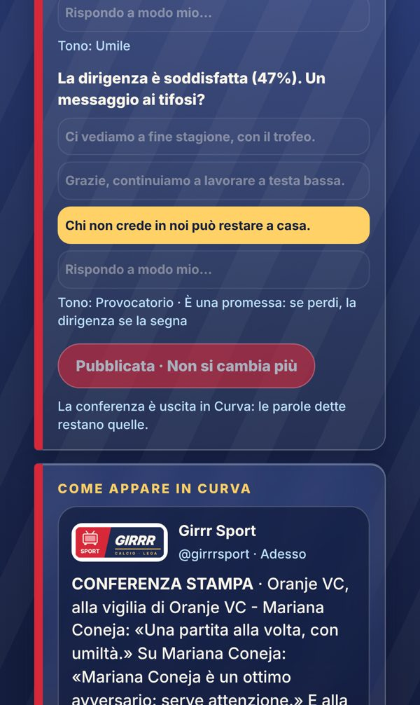

Già online
Conferenza bloccata
Una volta pubblicata, la conferenza non si cambia più: le parole dette restano quelle, come in una sala stampa vera.
- Prima di pubblicare, l'avviso che poi non si cambia
- Risposte spente e bottone «Pubblicata · Non si cambia più»
Dove: Conferenza, sotto le domande.